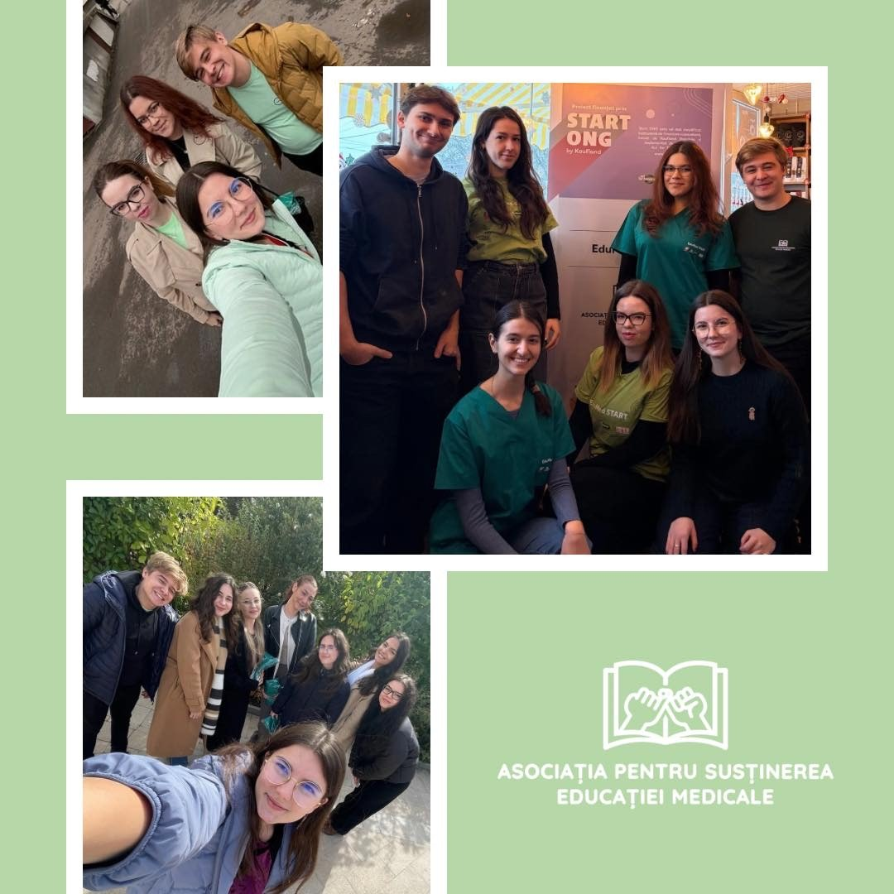
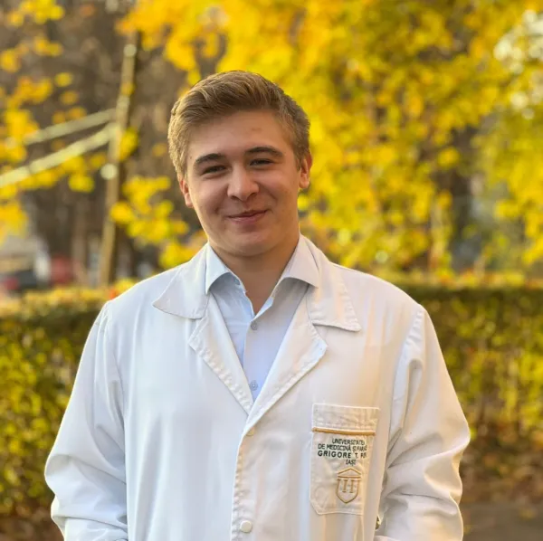
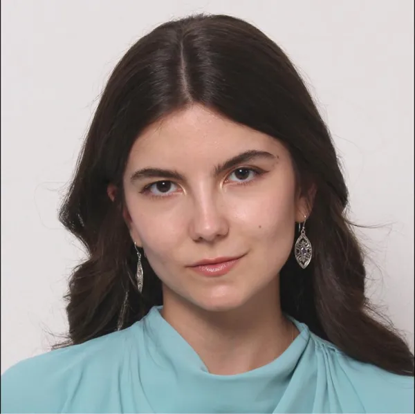
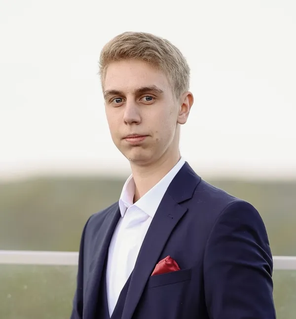

Despre ASEM
Asociația pentru Susținerea Educației Medicale (ASEM), brandul EduMed, activează în Iași din 2024.
Cine suntem
Asociația pentru Susținerea Educației Medicale (ASEM) a fost fondată în 2024 de doi studenți la Medicină și un student la Automatică și Calculatoare, uniți de dorința de a transmite copiilor informații medicale corecte, pe înțelesul lor.
Astăzi, lucrăm cu zeci de studenți voluntari, în special de la Universitatea de Medicină și Farmacie „Grigore T. Popa” din Iași, și colaborăm cu școli și grădinițe din 10 județe, printre care Iași, Vaslui, Prahova și Ilfov.

Misiunea noastră
Ne propunem să facem educația pentru sănătate accesibilă tuturor copiilor și tinerilor, prin programe practice și interactive, adaptate fiecărei comunități. Acordăm prioritate comunităților în care nevoia este mai mare.
Viziune
O societate în care toți copiii și adolescenții au acces egal la informații corecte despre sănătate și pot lua decizii informate pentru propria viață.
Valori
Modelul ASEM
- Studenți voluntari instruiți pentru activități educaționale și medicale.
- Ateliere practice cu manechine, mulaje, simulări și jocuri.
- Parteneriate cu școli și inspectorate școlare.
- Materiale educaționale pentru școli și resurse digitale gratuite.
- Raportăm transparent activitățile și cheltuielile către finanțatori.
Repere
- 2024
Înființarea asociației la Iași (iulie 2024).
- 2025
Primele granturi: Start ONG (Kaufland România), Fondul pentru un viitor mai bun în comunități (Lidl România, prin fundațiile comunitare Iași și Bacău), Pepcolandia (PEPCO). Peste 2.800 de beneficiari direcți. Participare la Acceleratorul Schimbării Sociale (FDSC, ARC).
- 2026
Educație Medicală Incluzivă (Corpul European de Solidaritate), EduMed Junior și goMed (Start ONG), EduSAFE, MedArt. Lansarea aplicației goMed (4 octombrie).
Consiliul Director
Consiliul Director este format din fondatorii asociației, care coordonează proiectele ASEM.

Lucian-Francisc Fechet
Președinte, reprezentant legal
Student la Facultatea de Medicină a UMF „Grigore T. Popa” din Iași. Asigură conducerea strategică a asociației și o reprezintă în relația cu partenerii și finanțatorii.

Marina-Elena Asafte
Vicepreședinte
Studentă la Facultatea de Medicină a UMF „Grigore T. Popa” din Iași. Coordonează proiectele educaționale și comunicarea asociației, precum și formarea echipelor de voluntari.

Alex-Ciprian Fechet
Secretar General
Student la Facultatea de Automatică și Calculatoare a Universității POLITEHNICA din București. Coordonează activitatea tehnică, gestiunea financiară și raportarea proiectelor.
Transparență
- Date juridice: ASEM · CIF 50446388 · Nr. Registrul asociațiilor și fundațiilor 89/A/26.07.2024 · Iași
- Documente disponibile la cerere: statut, rapoarte de activitate și rapoarte finale de proiect. Ne puteți scrie la consiliu.director.asem@gmail.com.